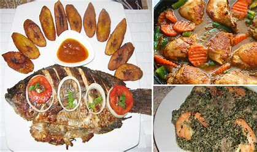

Une adresse à Akwa depuis 2016
Nous cuisinons les plats camerounais comme ils se font à la maison, avec le temps que ça demande. Voici comment, et pourquoi c'est plus compliqué qu'il n'y paraît.
D'où vient le restaurant
Cuisine Locale est née d'un constat : à Douala, on mange très bien chez soi et souvent mal à l'extérieur. Entre le maquis qui ressert la même sauce depuis trois jours et le restaurant qui « revisite » le ndolé jusqu'à le rendre méconnaissable, il manquait une adresse simple.
Nous avons ouvert avec quatre plats et deux tables. Il y en a aujourd'hui quatorze et trente-deux couverts, mais la règle du départ n'a pas bougé : ce qui n'est pas vendu le soir n'est pas servi le lendemain.

Comment la cuisine travaille
6 h — le marché
Les achats se font à Nkololoun, tous les matins. Le poisson vient du port. Ce qu'on ne trouve pas ne figure pas au menu du jour — c'est pour ça qu'un plat peut manquer.
8 h — les cuissons longues
Le koki cuit trois heures en feuilles de bananier. Les haricots mijotent depuis la veille. Le taro est pilé à la main : un robot le rend collant.
11 h — le service
Les fritures et les braises se font à la commande, jamais à l'avance. C'est ce qui explique les vingt-cinq minutes d'attente sur un poisson braisé.
Ce que nous ne faisons pas
Une carte se définit autant par ce qu'elle refuse. Ces quatre points nous ont coûté des clients, et nous les gardons.
- Pas de cube d'assaisonnement industriel. L'assaisonnement vient des épices, du njansang et du temps de cuisson. C'est moins régulier, et c'est le goût du plat.
- Pas de plat réchauffé. Un ndolé du jour même n'a pas le goût d'un ndolé de la veille, et le client le sait aussi bien que nous.
- Pas d'ingrédient importé quand l'équivalent existe ici. Huile de palme de Bonabéri, taro des Grassfields, gingembre du marché.
- Pas de « version allégée » des plats traditionnels. Si le mbongo tchobi est trop épicé, nous le disons avant la commande — nous ne le dénaturons pas.

L'équipe
Cinq personnes en cuisine, trois en salle. La cheffe de cuisine travaille ici depuis l'ouverture ; elle a appris le nkui chez sa grand-mère à Bafoussam, et c'est toujours elle qui le prépare.
Nous formons chaque année deux apprentis en alternance avec un centre de formation de Douala. Trois d'entre eux ont depuis ouvert leur propre établissement.
Venir goûter
Rue Joss, Akwa. Le plateau découverte est fait pour une première visite : cinq plats en portions, pour deux personnes.